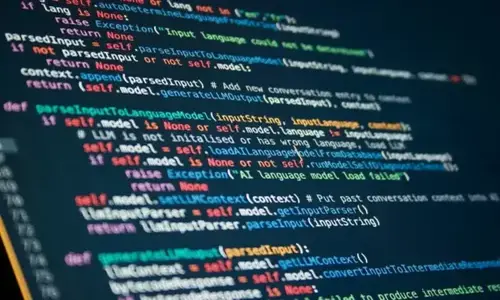

How will AI affect workers? Tech waves of the past show how unpredictable the path can be
Published:June 22,2023 1.32pm BST
New digital technologies have been a constant for workers over the past few decades, with a mixed record on the economy and individual'daily lives. AI's effect will likely be just as unpredictable.

Large Language models (LLMs) often appear to be on a fight to claim the title of largest and most power ful, but many organizations eyeing their use are beginning to realize big isn't always better.
The adoption of generative artificial intelligence (genAI) tools is on a steep incline. Organizations plan to invest 10% to 15% more on AI initiatives over the next year and a half compared to calendar year 2022, according to an IDC survey of more than 2,000 IT and line-of-business decision makers